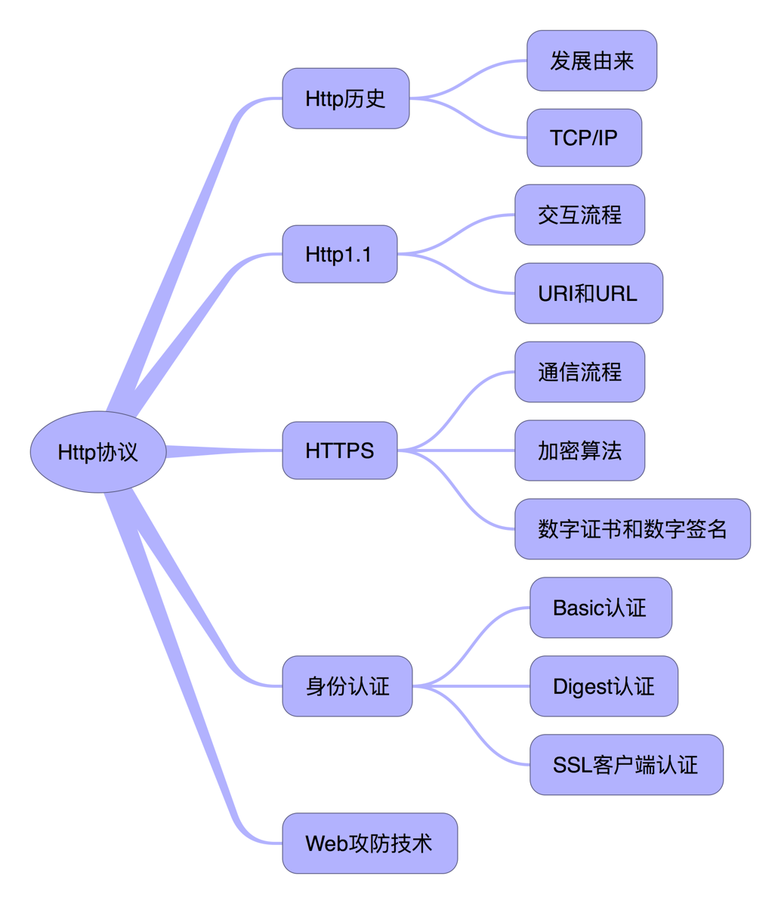
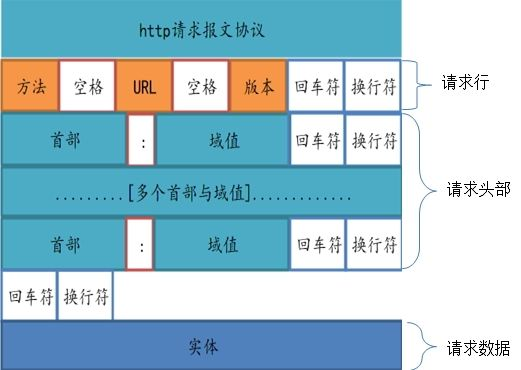
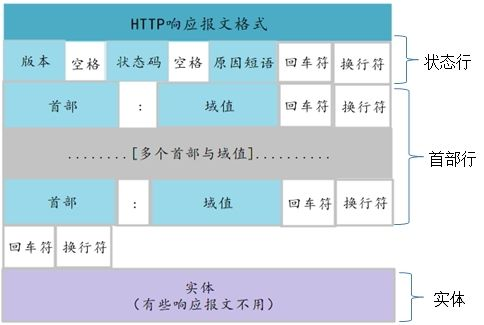
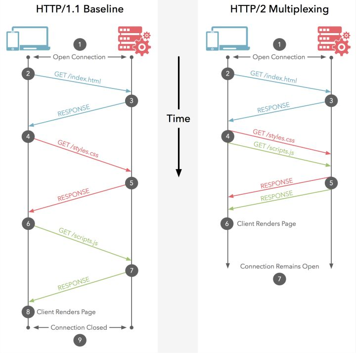
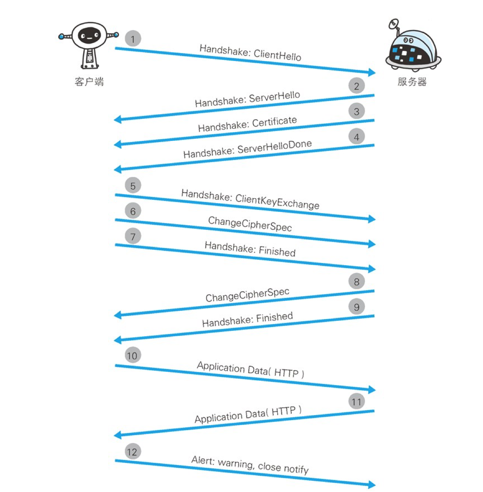

<!DOCTYPE html>
<html lang="zh-Hans">
<head><meta name="generator" content="Hexo 3.9.0">

    <!--[if lt IE 9]>
        <style>body {display: none; background: none !important} </style>
        <meta http-equiv="Refresh" Content="0; url=//outdatedbrowser.com/" />
    <![endif]-->

<meta charset="utf-8">
<meta http-equiv="X-UA-Compatible" content="IE=edge, chrome=1">
<meta name="viewport" content="width=device-width, initial-scale=1, maximum-scale=1, user-scalable=no">
<meta name="format-detection" content="telephone=no">
<meta name="author" content="Allen">


<meta name="description" content="对于HTTP协议，想必大家都不陌生，那如果让你讲讲来源、用途、HTTPS协议区别，你能讲出所以然来吗，我目前就是因为讲不是很清楚，所以有必要做个总结。">
<meta name="keywords" content="知识点,基础">
<meta property="og:type" content="article">
<meta property="og:title" content="我所理解的HTTP协议">
<meta property="og:url" content="http://cryallen.com/2018/07/21/2018-07-21-httpsay/index.html">
<meta property="og:site_name" content="斜杠Allen">
<meta property="og:description" content="对于HTTP协议，想必大家都不陌生，那如果让你讲讲来源、用途、HTTPS协议区别，你能讲出所以然来吗，我目前就是因为讲不是很清楚，所以有必要做个总结。">
<meta property="og:locale" content="zh-Hans">
<meta property="og:image" content="http://cryallen.com/2018/07/21/2018-07-21-httpsay/http.png">
<meta property="og:image" content="http://cryallen.com/2018/07/21/2018-07-21-httpsay/tcpip.png">
<meta property="og:image" content="http://cryallen.com/2018/07/21/2018-07-21-httpsay/httpRequest.jpeg">
<meta property="og:image" content="http://cryallen.com/2018/07/21/2018-07-21-httpsay/httpResponse.jpeg">
<meta property="og:image" content="http://cryallen.com/2018/07/21/2018-07-21-httpsay/httpCommunication.jpg">
<meta property="og:image" content="http://cryallen.com/2018/07/21/2018-07-21-httpsay/httpsCommunication.png">
<meta property="og:updated_time" content="2018-08-05T08:11:51.909Z">
<meta name="twitter:card" content="summary">
<meta name="twitter:title" content="我所理解的HTTP协议">
<meta name="twitter:description" content="对于HTTP协议，想必大家都不陌生，那如果让你讲讲来源、用途、HTTPS协议区别，你能讲出所以然来吗，我目前就是因为讲不是很清楚，所以有必要做个总结。">
<meta name="twitter:image" content="http://cryallen.com/2018/07/21/2018-07-21-httpsay/http.png">

<link rel="apple-touch-icon" href="/apple-touch-icon.png">


    <link rel="alternate" href="/atom.xml" title="斜杠Allen" type="application/atom+xml">


    <link rel="shortcut icon" href="/assets/blogImg/favicon.ico">


    <link href="//cdn.bootcss.com/animate.css/3.5.1/animate.min.css" rel="stylesheet">


    <link href="//cdn.bootcss.com/fancybox/2.1.5/jquery.fancybox.min.css" rel="stylesheet">


    <script src="//cdn.bootcss.com/pace/1.0.2/pace.min.js"></script>
    <link href="//cdn.bootcss.com/pace/1.0.2/themes/blue/pace-theme-minimal.css" rel="stylesheet">


<link rel="stylesheet" href="/css/style.css">


<link href="//cdn.bootcss.com/font-awesome/4.6.3/css/font-awesome.min.css" rel="stylesheet">


<title>我所理解的HTTP协议 | 斜杠Allen</title>

<script src="//cdn.bootcss.com/jquery/2.2.4/jquery.min.js"></script>
<script src="//cdn.bootcss.com/clipboard.js/1.5.10/clipboard.min.js"></script>

<script>
    var yiliaConfig = {
        fancybox: true,
        animate: true,
        isHome: false,
        isPost: true,
        isArchive: false,
        isTag: false,
        isCategory: false,
        fancybox_js: "//cdn.bootcss.com/fancybox/2.1.5/jquery.fancybox.min.js",
        scrollreveal: "//cdn.bootcss.com/scrollReveal.js/3.1.4/scrollreveal.min.js",
        search: undefined
    }
</script>


    <script>
        yiliaConfig.jquery_ui = [true, "//cdn.bootcss.com/jqueryui/1.10.4/jquery-ui.min.js", "//cdn.bootcss.com/jqueryui/1.10.4/css/jquery-ui.min.css"];
    </script>


    <script> yiliaConfig.rootUrl = "\/";</script>


    <script>
        var _hmt = _hmt || [];
        (function() {
            var hm = document.createElement("script");
            hm.src = "//hm.baidu.com/hm.js?234740c2645d4ac230a5d6f513789ede";
            var s = document.getElementsByTagName("script")[0];
            s.parentNode.insertBefore(hm, s);
        })();
    </script>

<script type="text/javascript" src="https://cdn.ywxi.net/js/1.js" async></script>
</head></html>
<body>
  <div id="container">
    <div class="left-col">
    <div class="overlay"></div>
<div class="intrude-less">
    <header id="header" class="inner">
        <a href="/" class="profilepic">
            
        </a>
        <hgroup>
          <h1 class="header-author"><a href="/">Allen</a></h1>
        </hgroup>

        
        <p class="header-subtitle">一位喜欢写作的Coding，目前在践行GTD、演讲、阅读、跑步</p>
        

        


        
            <div id="switch-btn" class="switch-btn">
                <div class="icon">
                    <div class="icon-ctn">
                        <div class="icon-wrap icon-house" data-idx="0">
                            <div class="birdhouse"></div>
                            <div class="birdhouse_holes"></div>
                        </div>
                        <div class="icon-wrap icon-ribbon hide" data-idx="1">
                            <div class="ribbon"></div>
                        </div>
                        
                        <div class="icon-wrap icon-link hide" data-idx="2">
                            <div class="loopback_l"></div>
                            <div class="loopback_r"></div>
                        </div>
                        
                        
                    </div>
                    
                </div>
                <div class="tips-box hide">
                    <div class="tips-arrow"></div>
                    <ul class="tips-inner">
                        <li>菜单</li>
                        <li>标签</li>
                        
                        <li>友情链接</li>
                        
                        
                    </ul>
                </div>
            </div>
        

        <div id="switch-area" class="switch-area">
            <div class="switch-wrap">
                <section class="switch-part switch-part1">
                    <nav class="header-menu">
                        <ul>
                        
                            <li><a href="/">主页</a></li>
                        
                            <li><a href="/archives/">所有文章</a></li>
                        
                            <li><a href="/tags/">标签云</a></li>
                        
                            <li><a href="/about/">关于我</a></li>
                        
                        </ul>
                    </nav>
                    <nav class="header-nav">
                        <ul class="social">
                            
                                <a class="fa Email" href="mailto:cr330326@126.com" title="Email"></a>
                            
                                <a class="fa 新浪微博" href="http://weibo.com/cr330326" title="新浪微博"></a>
                            
                                <a class="fa GitHub" href="https://github.com/cr330326" title="GitHub"></a>
                            
                                <a class="fa 博客园" href="http://www.cnblogs.com/cr330326/" title="博客园"></a>
                            
                                <a class="fa 知乎" href="https://www.zhihu.com/people/cryAllen" title="知乎"></a>
                            
                                <a class="fa 简书" href="http://www.jianshu.com/users/6f6f18ef43e5/latest_articles" title="简书"></a>
                            
                                <a class="fa 豆瓣" href="https://www.douban.com/people/cr330326/" title="豆瓣"></a>
                            
                                <a class="fa RSS" href="/atom.xml" title="RSS"></a>
                            
                        </ul>
                    </nav>
                </section>
                
                
                <section class="switch-part switch-part2">
                    <div class="widget tagcloud" id="js-tagcloud">
                        <ul class="tag-list"><li class="tag-list-item"><a class="tag-list-link" href="/tags/Activity/">Activity</a></li><li class="tag-list-item"><a class="tag-list-link" href="/tags/Adapter/">Adapter</a></li><li class="tag-list-item"><a class="tag-list-link" href="/tags/Android/">Android</a></li><li class="tag-list-item"><a class="tag-list-link" href="/tags/Animation/">Animation</a></li><li class="tag-list-item"><a class="tag-list-link" href="/tags/Annotations/">Annotations</a></li><li class="tag-list-item"><a class="tag-list-link" href="/tags/Broadcast/">Broadcast</a></li><li class="tag-list-item"><a class="tag-list-link" href="/tags/Builder/">Builder</a></li><li class="tag-list-item"><a class="tag-list-link" href="/tags/ContentProvider/">ContentProvider</a></li><li class="tag-list-item"><a class="tag-list-link" href="/tags/EventBus/">EventBus</a></li><li class="tag-list-item"><a class="tag-list-link" href="/tags/Fragment/">Fragment</a></li><li class="tag-list-item"><a class="tag-list-link" href="/tags/Handler/">Handler</a></li><li class="tag-list-item"><a class="tag-list-link" href="/tags/Java/">Java</a></li><li class="tag-list-item"><a class="tag-list-link" href="/tags/Looper/">Looper</a></li><li class="tag-list-item"><a class="tag-list-link" href="/tags/Marshmallow/">Marshmallow</a></li><li class="tag-list-item"><a class="tag-list-link" href="/tags/MessageQueue/">MessageQueue</a></li><li class="tag-list-item"><a class="tag-list-link" href="/tags/Permission/">Permission</a></li><li class="tag-list-item"><a class="tag-list-link" href="/tags/ProGuard/">ProGuard</a></li><li class="tag-list-item"><a class="tag-list-link" href="/tags/Reflection/">Reflection</a></li><li class="tag-list-item"><a class="tag-list-link" href="/tags/Service/">Service</a></li><li class="tag-list-item"><a class="tag-list-link" href="/tags/Singleton/">Singleton</a></li><li class="tag-list-item"><a class="tag-list-link" href="/tags/Touch/">Touch</a></li><li class="tag-list-item"><a class="tag-list-link" href="/tags/Unity/">Unity</a></li><li class="tag-list-item"><a class="tag-list-link" href="/tags/java/">java</a></li><li class="tag-list-item"><a class="tag-list-link" href="/tags/个人成长/">个人成长</a></li><li class="tag-list-item"><a class="tag-list-link" href="/tags/代理/">代理</a></li><li class="tag-list-item"><a class="tag-list-link" href="/tags/代码混淆/">代码混淆</a></li><li class="tag-list-item"><a class="tag-list-link" href="/tags/单例/">单例</a></li><li class="tag-list-item"><a class="tag-list-link" href="/tags/参数/">参数</a></li><li class="tag-list-item"><a class="tag-list-link" href="/tags/反射/">反射</a></li><li class="tag-list-item"><a class="tag-list-link" href="/tags/基础/">基础</a></li><li class="tag-list-item"><a class="tag-list-link" href="/tags/学习总结/">学习总结</a></li><li class="tag-list-item"><a class="tag-list-link" href="/tags/工作总结/">工作总结</a></li><li class="tag-list-item"><a class="tag-list-link" href="/tags/工厂/">工厂</a></li><li class="tag-list-item"><a class="tag-list-link" href="/tags/年终总结/">年终总结</a></li><li class="tag-list-item"><a class="tag-list-link" href="/tags/并发/">并发</a></li><li class="tag-list-item"><a class="tag-list-link" href="/tags/广播/">广播</a></li><li class="tag-list-item"><a class="tag-list-link" href="/tags/接口/">接口</a></li><li class="tag-list-item"><a class="tag-list-link" href="/tags/方法/">方法</a></li><li class="tag-list-item"><a class="tag-list-link" href="/tags/有效性/">有效性</a></li><li class="tag-list-item"><a class="tag-list-link" href="/tags/服务/">服务</a></li><li class="tag-list-item"><a class="tag-list-link" href="/tags/构造器/">构造器</a></li><li class="tag-list-item"><a class="tag-list-link" href="/tags/枚举/">枚举</a></li><li class="tag-list-item"><a class="tag-list-link" href="/tags/泛型/">泛型</a></li><li class="tag-list-item"><a class="tag-list-link" href="/tags/注解/">注解</a></li><li class="tag-list-item"><a class="tag-list-link" href="/tags/生命周期/">生命周期</a></li><li class="tag-list-item"><a class="tag-list-link" href="/tags/知识点/">知识点</a></li><li class="tag-list-item"><a class="tag-list-link" href="/tags/程序设计/">程序设计</a></li><li class="tag-list-item"><a class="tag-list-link" href="/tags/类/">类</a></li><li class="tag-list-item"><a class="tag-list-link" href="/tags/线程/">线程</a></li><li class="tag-list-item"><a class="tag-list-link" href="/tags/装饰/">装饰</a></li><li class="tag-list-item"><a class="tag-list-link" href="/tags/观察者/">观察者</a></li><li class="tag-list-item"><a class="tag-list-link" href="/tags/语音识别/">语音识别</a></li><li class="tag-list-item"><a class="tag-list-link" href="/tags/读书笔记/">读书笔记</a></li><li class="tag-list-item"><a class="tag-list-link" href="/tags/通用/">通用</a></li><li class="tag-list-item"><a class="tag-list-link" href="/tags/重载/">重载</a></li><li class="tag-list-item"><a class="tag-list-link" href="/tags/静态工厂/">静态工厂</a></li></ul>
                    </div>
                </section>
                
                
                
                <section class="switch-part switch-part3">
                    <div id="js-friends">
                    
                      <a class="main-nav-link switch-friends-link" href="https://hexo.io">Hexo</a>
                    
                      <a class="main-nav-link switch-friends-link" href="https://pages.github.com/">GitHub</a>
                    
                      <a class="main-nav-link switch-friends-link" href="http://www.cnbeta.com/">Cnbeta</a>
                    
                    </div>
                </section>
                

                
            </div>
        </div>
    </header>                
</div>
    </div>
    <div class="mid-col">
      <nav id="mobile-nav">
      <div class="overlay">
          <div class="slider-trigger"></div>
          <h1 class="header-author js-mobile-header hide"><a href="/" title="回到主页">Allen</a></h1>
      </div>
    <div class="intrude-less">
        <header id="header" class="inner">
            <a href="/" class="profilepic">
                
            </a>
            <hgroup>
              <h1 class="header-author"><a href="/" title="回到主页">Allen</a></h1>
            </hgroup>
            
            <p class="header-subtitle">一位喜欢写作的Coding，目前在践行GTD、演讲、阅读、跑步</p>
            
            <nav class="header-menu">
                <ul>
                
                    <li><a href="/">主页</a></li>
                
                    <li><a href="/archives/">所有文章</a></li>
                
                    <li><a href="/tags/">标签云</a></li>
                
                    <li><a href="/about/">关于我</a></li>
                
                <div class="clearfix"></div>
                </ul>
            </nav>
            <nav class="header-nav">
                        <ul class="social">
                            
                                <a class="fa Email" target="_blank" href="mailto:cr330326@126.com" title="Email"></a>
                            
                                <a class="fa 新浪微博" target="_blank" href="http://weibo.com/cr330326" title="新浪微博"></a>
                            
                                <a class="fa GitHub" target="_blank" href="https://github.com/cr330326" title="GitHub"></a>
                            
                                <a class="fa 博客园" target="_blank" href="http://www.cnblogs.com/cr330326/" title="博客园"></a>
                            
                                <a class="fa 知乎" target="_blank" href="https://www.zhihu.com/people/cryAllen" title="知乎"></a>
                            
                                <a class="fa 简书" target="_blank" href="http://www.jianshu.com/users/6f6f18ef43e5/latest_articles" title="简书"></a>
                            
                                <a class="fa 豆瓣" target="_blank" href="https://www.douban.com/people/cr330326/" title="豆瓣"></a>
                            
                                <a class="fa RSS" target="_blank" href="/atom.xml" title="RSS"></a>
                            
                        </ul>
            </nav>
        </header>                
    </div>
    <link class="menu-list" tags="标签" friends="友情链接" about="关于我"/>
</nav>
      <div class="body-wrap"><article id="post-2018-07-21-httpsay" class="article article-type-post" itemscope itemprop="blogPost">
  
    <div class="article-meta">
      <a href="/2018/07/21/2018-07-21-httpsay/" class="article-date">
      <time datetime="2018-07-21T15:02:38.000Z" itemprop="datePublished">2018-07-21</time>
</a>


    </div>
  
  <div class="article-inner">
    
      <input type="hidden" class="isFancy" />
    
    
      <header class="article-header">
        
  
    <h1 class="article-title" itemprop="name">
      我所理解的HTTP协议
    </h1>
  

      </header>
      
      <div class="article-info article-info-post">
        
    <div class="article-category tagcloud">
    <a class="article-category-link" href="/categories/基础/">基础</a>
    </div>


        
    <div class="article-tag tagcloud">
        <ul class="article-tag-list"><li class="article-tag-list-item"><a class="article-tag-list-link" href="/tags/基础/">基础</a></li><li class="article-tag-list-item"><a class="article-tag-list-link" href="/tags/知识点/">知识点</a></li></ul>
    </div>

        <div class="clearfix"></div>
      </div>
      
    
    <div class="article-entry" itemprop="articleBody">
      
          
        <h3 id="前言"><a href="#前言" class="headerlink" title="前言"></a>前言</h3><p>对于HTTP协议，想必大家都不陌生，在工作中经常用到，特别是针对移动端和前端开发人员来说，要获取服务端数据，基本走的网络请求都是基于HTTP协议，特别是RESTFUL + JSON 这种搭配特别主流。那如果让大家具体讲讲HTTP协议背后的历史、原理、交互流程、与HTTPS区别、身份认证、Web攻防技术等等信息，大家能讲的出来吗，反正我讲的也是一知半解，虽然会经常看这方面的文章，但也只是在具体项目进行开发过程中碰到对某个概念不清楚，才会去特意看下，却没有特意去总结归纳为一直知识点，没有完整的表达描述过，其实对这个知识点还是没掌握好的，所以用写作方式来进行阐述是很好一个方式，目前也正在践行着。</p>
<h3 id="思维导图"><a href="#思维导图" class="headerlink" title="思维导图"></a>思维导图</h3><p>在写作之前，这篇文章主要想讲的内容在以下这张图中，通过做思维导图方式来表达一篇文章内容，我觉得逻辑会特别清楚，同时也是对某个知识点会很好进行总结归纳。</p>
<p></p>
<h3 id="HTTP历史"><a href="#HTTP历史" class="headerlink" title="HTTP历史"></a>HTTP历史</h3><p><strong>发展由来</strong> </p>
<p>在1989 年 3 月， 互联网还只属于少数人。 在这一互联网的黎明期， HTTP 诞生了。CERN（ 欧洲核子研究组织）的蒂姆 • 伯纳斯 - 李（ Tim BernersLee）博士提出了一种能让远隔两地的研究者们共享知识的设想。 最初设想 的 基本理念是： 借助多文档之间相互关联形成的超文本（ HyperText），连成可相互参阅的 WWW（ World Wide Web，万维网）。并且版本从 HTTP 1.0 到 HTTP 1.1 再到现在的 HTTP 2.0，目前主流版本还是基于 HTTP 1.1，HTTP 协议同时也是目前互联网上应用最为广泛的一种网络协议，所有的 WWW 文件都必须遵守这个标准，设计HTTP 最初的目的是为了提供一种发布和接收 HTML 页面的方法。</p>
<p><strong>TCP/IP</strong></p>
<p>我们都知道 HTTP 协议在 根据 TCP/IP 网络分层来看，它是属于应用层，TCP/IP 网络分层总共有5层，它是属于最上层，它的下一层则是 TCP/IP 传输层，如图所示：</p>
<p></p>
<p>从逻辑平行来看，发送方和接受方都是处于同一平行层，发送方每层传递的信息会在下一层进行信息封装加密，然后逐层传递，通过实际物理链路进行传递，然后接收方接收到信息进行解密分析，不断把报文头信息进行还原，最后处理发送方发送过来的信息，处理完之后，再用同样的方式传递回去，两者传输通信方式是全双工模式。在此之前需要一个建立连接过程，所谓的三次握手，通信结束也有断开连接过程，也就是四次握手断开操作。</p>
<p>在讲述 HTTP 协议为何了解 TCP/IP 内容呢，因为我们需要知道 HTTP 协议实际通信过程是怎么样的，它所依赖的环境是怎么样的，从切面角度去看，实际是经历了这5层通信，从平面去看，默认以为是客户端与服务端仅仅进行平层通信而已，那是因为封装的方便。</p>
<h3 id="HTTP-1-1"><a href="#HTTP-1-1" class="headerlink" title="HTTP 1.1"></a>HTTP 1.1</h3><p>因为目前主流在用的还是以 HTTP 1.1 版本为主，那就用这个版本来分析。</p>
<p>####HTTP请求协议详解</p>
<p>一个典型HTTP1.1的请求协议报文结构，大体上可以分为三块，即请求行、头部、消息主体。</p>
<p></p>
<p><strong>请求行</strong></p>
<p>请求行包含HTTP请求方法、请求的URL、HTTP协议版本三个内容，它们之间以空格间隔，并以回车+换行结束。HTTP请求方法有下面几种,常用的有GET、POST请求。 </p>
<ul>
<li>OPTIONS </li>
<li>GET </li>
<li>HEAD </li>
<li>POST </li>
<li>DELETE </li>
<li>TRACE </li>
<li>CONNECT</li>
</ul>
<p><strong>请求头部</strong></p>
<p>头部可以分成三个部分，为常用头域、请求头域、实体头域。其中常用头域和实体头域部分内容在响应协议部分也有相同的定义。</p>
<p><strong>常用头域</strong></p>
<table>
<thead>
<tr>
<th>常用头域名称</th>
<th>作用描述</th>
</tr>
</thead>
<tbody>
<tr>
<td>Cache-Control</td>
<td>缓存控制</td>
</tr>
<tr>
<td>Connection</td>
<td>HTTP 1.1默认是支持长连接的(Keep-Alive)，如果不希望支持长连接则需要在此域中写入close</td>
</tr>
<tr>
<td>Date</td>
<td>表明消息产生的日期和时间</td>
</tr>
<tr>
<td>Pragma</td>
<td></td>
</tr>
<tr>
<td>Trailer</td>
<td></td>
</tr>
<tr>
<td>Transfer-Encoding</td>
<td>告知接收端为了保证报文的可靠传输，对报文采用了什么编码方式</td>
</tr>
<tr>
<td>Upgrade</td>
<td>给出了发送端可能想要”升级”使用的新版本或协议</td>
</tr>
<tr>
<td>Via</td>
<td>显示了报文经过的中间节点(代理、网关)</td>
</tr>
<tr>
<td>Warning</td>
</tr>
</tbody>
</table>
<p><strong>请求头域</strong></p>
<table>
<thead>
<tr>
<th>请求头域名称</th>
<th>作用描述</th>
</tr>
</thead>
<tbody>
<tr>
<td>Accept</td>
<td>指明请求端可以接受处理的媒体类型</td>
</tr>
<tr>
<td>Accept-Charset</td>
<td>指明请求端可以接受的字符集</td>
</tr>
<tr>
<td>Accept-Encoding</td>
<td>指明请求端可以接受的编码格式</td>
</tr>
<tr>
<td>Authorization</td>
<td>授权</td>
</tr>
<tr>
<td>Expect</td>
<td>允许客户端列出某请求所要求的服务器行为</td>
</tr>
<tr>
<td>From</td>
<td>提供了客户端用户的E-mail地址</td>
</tr>
<tr>
<td>Host</td>
<td>指明请求端的网络主机和端口号</td>
</tr>
<tr>
<td>If-Match</td>
<td>服务端在响应头部里面返回ETag信息，客户端请求时在头部添加If-Match（值为响应的ETag），服务端接收后判断ETag是否相同，若相同则处理请求，否则不处理请求。</td>
</tr>
<tr>
<td>If-Modified-Since</td>
<td>客户端在请求某一资源文件时，在头部加上If-Modified-Since(值为该资源文件的最后修改时间)，服务端接收后将客户端上报的修改时间与服务器存储的文件的最后修改时间做对比，如果相同，说明资源文件没有更新，返回304状态码，告诉客户端使用原来的缓存文件。否则返回资源内容。</td>
</tr>
<tr>
<td>If-None-Match</td>
<td>服务端在响应头部里面返回ETag信息，客户端请求时在头部添加If-None-Match(值为响应的ETag)，服务端接收后判断ETag是否相同，若相同，说明资源没有更新，返回304状态码，告诉客户端使用原来的缓存文件。否则返回资源内容。</td>
</tr>
<tr>
<td>If-Range</td>
<td>该头域与Range头域一起使用，服务端在响应头部里面返回ETag信息,客户端请求时在头部添加If-Range（值为响应的ETag)，服务端接收后判断ETag是否相同，若相同，则返回状态码206，返回内容为Range指定的字节范围。若不相同，则返回状态码200，返回内容为整个实体。</td>
</tr>
<tr>
<td>If-Unmodified-Since</td>
<td>客户端在请求某一资源文件时，在头部加上If-Modified-Since(值为该资源文件的最后修改时间)，端接收后将客户端上报的修改时间与服务器存储的文件的最后修改时间做对比，如果相同，则返回资源内容，如果不相同则返回状态码412。</td>
</tr>
<tr>
<td>Max-Forwards</td>
<td>配合TRACE、OPTIONS方法使用，限制在通往服务器的路径上的代理或网关的数量。</td>
</tr>
<tr>
<td>Proxy-Authorization</td>
<td>代理授权</td>
</tr>
<tr>
<td>Range</td>
<td>表示客户端向服务端请求指定范围的字节数量:Range:bytes=0-500表示请求第1个到第501个的字节数量。Range:bytes=100-表示请求第101到文件倒数第一个字节的字节数量。Range:bytes=-500表示请求最后500个字节的数量。Range可以同时指定多组(Range:bytes=500-600,601-999)。并不是所有的服务端都支持字节范围请求的，如果支持字节范围请求，服务端会返回状态码206，若不支持则会返回200，客户端需要根据状态码来判断服务端是否支持字节范围操作。此域可用于断点下载，即在断点处请求后面的内容，也可用于多线程下载同一个文件，每个线程负责一个文件的一部分下载工作，多个线程协同完成整个文件的下载。</td>
</tr>
<tr>
<td>Referer</td>
<td>用于指定客户端请求的来源，是从搜索引擎过来的？还是从其它网站链接过来的？服务器根据此域，有时可以用做防盗链处理，不在指定范围内的来源，统统拒绝。</td>
</tr>
<tr>
<td>TE</td>
<td>指明客户端可以接受哪些传输编码。</td>
</tr>
</tbody>
</table>
<p><strong>实体头域</strong></p>
<table>
<thead>
<tr>
<th>实体头域名称</th>
<th>作用描述</th>
</tr>
</thead>
<tbody>
<tr>
<td>Allow</td>
<td>指明被请求的资源所支持的方法，如GET、HEAD、PUT</td>
</tr>
<tr>
<td>Content-Encoding</td>
<td>指明实体内容所采用的编码方式</td>
</tr>
<tr>
<td>Content-Language</td>
<td>指明实体内容使用的语言</td>
</tr>
<tr>
<td>Content-Length</td>
<td>指明请求实体的字节数量</td>
</tr>
<tr>
<td>Content-Location</td>
<td>可以用来为实体提供对应资源的位置</td>
</tr>
<tr>
<td>Content-MD5</td>
<td>指定实体内容的MD5，用于内容的完整性校验(base64的128位MD5)</td>
</tr>
<tr>
<td>Content-Range</td>
<td></td>
</tr>
<tr>
<td>Content-Type</td>
<td>指定实体的媒体类型</td>
</tr>
<tr>
<td>Expires</td>
<td>指明实体的过期时间</td>
</tr>
<tr>
<td>Last-Modified</td>
<td>指明实体最后被修改的时间</td>
</tr>
</tbody>
</table>
<h4 id="HTTP响应协议详解"><a href="#HTTP响应协议详解" class="headerlink" title="HTTP响应协议详解"></a>HTTP响应协议详解</h4><p>HTTP1.1的响应协议报文结构，大体上可以分为三块，即状态行、头部、消息主体。</p>
<p></p>
<p><strong>状态行</strong></p>
<p>状态行包含HTTP协议版本、状态码、原因短语三个内容，它们之间以空格间隔，并以回车+换行结束。</p>
<p>状态码由三位数字组成，第一位数字定义了响应类型，主要有如下五种类型的状态码</p>
<table>
<thead>
<tr>
<th>状态码类型</th>
<th>作用描述</th>
</tr>
</thead>
<tbody>
<tr>
<td>1xx</td>
<td>报告（请求被接收，继续处理）</td>
</tr>
<tr>
<td>2xx</td>
<td>成功（请求被成功的接收并处理）</td>
</tr>
<tr>
<td>3xx</td>
<td>重发</td>
</tr>
<tr>
<td>4xx</td>
<td>客户端出错（客户端错误的协议格式和不能处理的请求）</td>
</tr>
<tr>
<td>5xx</td>
<td>服务器出错（服务器无法完成有效的请求处理）</td>
</tr>
</tbody>
</table>
<p>状态码和对应的原因短语详细描述</p>
<table>
<thead>
<tr>
<th>状态码</th>
<th>原因短语</th>
<th>中文描述</th>
</tr>
</thead>
<tbody>
<tr>
<td>100</td>
<td>Continue</td>
<td>继续</td>
</tr>
<tr>
<td>101</td>
<td>Switching Protocols</td>
<td>切换协议</td>
</tr>
<tr>
<td>200</td>
<td>OK</td>
<td>成功</td>
</tr>
<tr>
<td>201</td>
<td>Created</td>
<td>已创建</td>
</tr>
<tr>
<td>202</td>
<td>Accepted</td>
<td>接受</td>
</tr>
<tr>
<td>203</td>
<td>Non-Authoritative information</td>
<td>非权威信息</td>
</tr>
<tr>
<td>204</td>
<td>No Content</td>
<td>无内容</td>
</tr>
<tr>
<td>205</td>
<td>Reset Content</td>
<td>重置内容</td>
</tr>
<tr>
<td>206</td>
<td>Partial Content</td>
<td>部分内容</td>
</tr>
<tr>
<td>300</td>
<td>Multiple Choices</td>
<td>多个选择</td>
</tr>
<tr>
<td>301</td>
<td>Moved Permanently</td>
<td>永久移动</td>
</tr>
<tr>
<td>302</td>
<td>Found</td>
<td>发现</td>
</tr>
<tr>
<td>303</td>
<td>See Other</td>
<td>见其它</td>
</tr>
<tr>
<td>304</td>
<td>Not Modified</td>
<td>没有改变</td>
</tr>
<tr>
<td>305</td>
<td>Use Proxy</td>
<td>使用代理</td>
</tr>
<tr>
<td>307</td>
<td>Temporary Redirect</td>
<td>临时重发</td>
</tr>
<tr>
<td>400</td>
<td>Bad Request</td>
<td>坏请求</td>
</tr>
<tr>
<td>401</td>
<td>Unauthorized</td>
<td>未授权的</td>
</tr>
<tr>
<td>402</td>
<td>Payment Required</td>
<td>必需的支付</td>
</tr>
<tr>
<td>403</td>
<td>Forbidden</td>
<td>禁用</td>
</tr>
<tr>
<td>404</td>
<td>Not Found</td>
<td>没有找到</td>
</tr>
<tr>
<td>405</td>
<td>Method Not Allowed</td>
<td>方法不被允许</td>
</tr>
<tr>
<td>406</td>
<td>Not Acceptable</td>
<td>不可接受的</td>
</tr>
<tr>
<td>407</td>
<td>Proxy Authentication Required</td>
<td>需要代理验证</td>
</tr>
<tr>
<td>408</td>
<td>Request Timeout</td>
<td>请求超时</td>
</tr>
<tr>
<td>409</td>
<td>Confilict</td>
<td>冲突</td>
</tr>
<tr>
<td>410</td>
<td>Gone</td>
<td>不存在</td>
</tr>
<tr>
<td>411</td>
<td>Length Required</td>
<td>长度必需</td>
</tr>
<tr>
<td>412</td>
<td>Precondition Failed</td>
<td>先决条件失败</td>
</tr>
<tr>
<td>413</td>
<td>Request Entity Too Large</td>
<td>请求实体太大</td>
</tr>
<tr>
<td>414</td>
<td>Request-URI Too Long</td>
<td>请求URI太长</td>
</tr>
<tr>
<td>415</td>
<td>Unsupported Media Type</td>
<td>不支持的媒体类型</td>
</tr>
<tr>
<td>416</td>
<td>Requested Range Not Satisfiable</td>
<td>请求范围不被满足</td>
</tr>
<tr>
<td>417</td>
<td>Expectation Failed</td>
<td>期望失败</td>
</tr>
<tr>
<td>500</td>
<td>Internal Server Error</td>
<td>内部服务器错误</td>
</tr>
<tr>
<td>501</td>
<td>Not Implemented</td>
<td>服务端没有实现</td>
</tr>
<tr>
<td>502</td>
<td>Bad Gateway</td>
<td>坏网关</td>
</tr>
<tr>
<td>503</td>
<td>Service Unavailable</td>
<td>服务不能获得</td>
</tr>
<tr>
<td>504</td>
<td>Gateway Timeout</td>
<td>网关超时</td>
</tr>
<tr>
<td>505</td>
<td>HTTP Version Not Supported</td>
<td>HTTP协议版本不支持</td>
</tr>
</tbody>
</table>
<p><strong>响应头域</strong></p>
<table>
<thead>
<tr>
<th>响应头域名称</th>
<th>作用描述</th>
</tr>
</thead>
<tbody>
<tr>
<td>Accept-Ranges</td>
<td>服务器向客户端指明服务器对范围请求的接受度</td>
</tr>
<tr>
<td>Age</td>
<td>从原始服务器到代理缓存形成的估算时间（以秒计，非负）</td>
</tr>
<tr>
<td>ETag</td>
<td>实体标签</td>
</tr>
<tr>
<td>Location</td>
<td>指定重定向的URI</td>
</tr>
<tr>
<td>Proxy-Autenticate</td>
<td>它指出认证方案和可应用到代理的该URL上的参数</td>
</tr>
<tr>
<td>Retry-After</td>
<td>如果实体暂时不可取，通知客户端在指定时间之后再次尝试</td>
</tr>
<tr>
<td>Server</td>
<td>指明服务器用于处理请求的软件信息</td>
</tr>
<tr>
<td>Vary</td>
<td>告诉下游代理是使用缓存响应还是从原始服务器请求</td>
</tr>
<tr>
<td>WWW-Authenticate</td>
<td>表明客户端请求实体应该使用的授权方案</td>
</tr>
</tbody>
</table>
<p><strong>交互流程</strong></p>
<p></p>
<p>整体通信其实就是发送/响应过程，一个请求过去，对方有响应内容来返回，请求发送和响应回答方式，同时 HTTP 1.1 的特点是无状态的、快速响应的，一次连接则马上就断开。HTTP 2.0 则是相反，完善了 HTTP 1.1 出现的问题，两者连接是可复用的，同时可支持并行发送，一次多个文件传递，多个文件响应，支持传递的文件大小以二进制方式，这样确保可支持更大文件，在安全性上比 HTTP 1.1上更强大，具体细节可查阅相关文档。</p>
<p><strong>URL 和 URI</strong></p>
<p>这里有必要提下 URL 和 URI 这个两个名词的区别。URL表示标记了一个WWW互联网资源（用地址标记），并给出了他的访问地址。而URI表示一个网络资源，仅此而已。</p>
<h3 id="HTTPS"><a href="#HTTPS" class="headerlink" title="HTTPS"></a>HTTPS</h3><p><strong>通信流程</strong></p>
<p></p>
<p>具体步骤：</p>
<p>步骤 1：客户端通过发送 Client Hello 报文开始 SSL 通信。 报文中包含客户端支持的 SSL 的指定版本、 加密组件（Cipher Suite）列表（所使用的加密算法及密钥长度等）。 </p>
<p>步骤 2：服务器可进行 SSL 通信时， 会以 Server Hello 报文作为应答。 和客户端一样， 在报文中包含 SSL 版本 以及加密组件。 服务器的加密组件内容是从接收到的客户端加密组件内筛选出来的。 </p>
<p>步骤 3：之后服务器发送 Certificate 报文。 报文中包含公开密钥证书。 </p>
<p>步骤 4：最后服务器发送 Server Hello Done 报文通知客户端， 最初阶段的 SSL 握手协商部分结束。 </p>
<p>步骤 5：SSL 第一次握手结束之后， 客户端以 Client Key Exchange 报文作为回应。 报文中包含通信加密中使用 的一种被称为 Pre- master secret 的随机密码串。 该报文已用步骤 3 中的公开密钥进行加密。 </p>
<p>步骤 6：接着客户端继续发送 Change Cipher Spec 报文。 该报文会提示服务器， 在此报文之后的通信会采用 Pre- master secret 密钥加密。 </p>
<p>步骤 7：客户端发送 Finished 报文。 该报文包含连接至今全部报文的整体校验值。 这次握手协商是否能够成功， 要以服务器是否能够正确解密该报文作为判定标准。 </p>
<p>步骤 8：服务器同样发送 Change Cipher Spec 报文。 </p>
<p>步骤 9：服务器同样发送 Finished 报文。 </p>
<p>步骤 10：服务器和客户端的 Finished 报文交换完毕之后， SSL 连接就算建立完成。 当然， 通信会受到 SSL 的保护。 从此处开始进行应用层协议的通信， 即发送 HTTP 请求。 </p>
<p>步骤 11： 应用层协议通信， 即发送 HTTP 响应。 </p>
<p>步骤 12： 最后 由 客户 端断开连接。 断开连接时， 发送 close_ notify 报文。 上图做了一些省略， 这步之后再 发送 TCP FIN 报文来关闭与 TCP 的通信。 </p>
<p><strong>加密算法</strong></p>
<p>常见的加密<strong>算法</strong>可以分成三类，对称加密算法，非对称加密算法和Hash算法。</p>
<blockquote>
<p><strong>对称加密</strong></p>
<p>指加密和解密使用相同密钥的加密算法。对称加密算法的优点在于加解密的高速度和使用长密钥时的难破解性。假设两个用户需要使用对称加密方法加密然后交换数据，则用户最少需要2个密钥并交换使用，如果企业内用户有n个，则整个企业共需要n×(n-1) 个密钥，密钥的生成和分发将成为企业信息部门的恶梦。对称加密算法的安全性取决于加密密钥的保存情况，但要求企业中每一个持有密钥的人都保守秘密是不可能的，他们通常会有意无意的把密钥泄漏出去——如果一个用户使用的密钥被入侵者所获得，入侵者便可以读取该用户密钥加密的所有文档，如果整个企业共用一个加密密钥，那整个企业文档的保密性便无从谈起。</p>
<p><strong>常见的对称加密算法：</strong>DES、3DES、DESX、Blowfish、IDEA、RC4、RC5、RC6和AES</p>
</blockquote>
<blockquote>
<p><strong>非对称加密</strong></p>
<p>指加密和解密使用不同密钥的加密算法，也称为公私钥加密。假设两个用户要加密交换数据，双方交换公钥，使用时一方用对方的公钥加密，另一方即可用自己的私钥解密。如果企业中有n个用户，企业需要生成n对密钥，并分发n个公钥。由于公钥是可以公开的，用户只要保管好自己的私钥即可，因此加密密钥的分发将变得十分简单。同时，由于每个用户的私钥是唯一的，其他用户除了可以可以通过信息发送者的公钥来验证信息的来源是否真实，还可以确保发送者无法否认曾发送过该信息。非对称加密的缺点是加解密速度要远远慢于对称加密，在某些极端情况下，甚至能比非对称加密慢上1000倍。</p>
<p><strong>常见的非对称加密算法：</strong>RSA、ECC（移动设备用）、Diffie-Hellman、El Gamal、DSA（数字签名用）</p>
</blockquote>
<blockquote>
<p><strong>Hash算法</strong></p>
<p>Hash算法特别的地方在于它是一种单向算法，用户可以通过Hash算法对目标信息生成一段特定长度的唯一的Hash值，却不能通过这个Hash值重新获得目标信息。因此Hash算法常用在不可还原的密码存储、信息完整性校验等。</p>
<p><strong>常见的Hash算法：</strong>MD2、MD4、MD5、HAVAL、SHA、SHA-1、HMAC、HMAC-MD5、HMAC-SHA1</p>
</blockquote>
<p><strong>数字证书和数字签名证书 </strong></p>
<blockquote>
<p>数字证书是由权威的CA机构颁发的无法被伪造的证书，用于校验发送方实体身份的认证。解决如上问题，只需要发送方A找一家权威的CA机构申请颁发数字证书，证书内包含A的相关资料信息以及A的公钥，然后将正文A、数字证书以及A生成的数字签名发送给B，此时中间人M是无法篡改正文内容而转发给B的，因为M不可能拥有这家CA的私钥，无法随机制作数字证书。当然，如果M也申请了同一家CA的数字证书并替换发送修改后的正文、M的数字证书和M的数字签名，此时B接收到数据时，会校验数字证书M中的信息与当前通信方是否一致，发现数字证书中的个人信息为M并非A，说明证书存在替换风险，可以选择中断通信。</p>
<p>为什么CA制作的证书是无法被伪造的？其实CA制作的数字证书内还包含CA对证书的数字签名，接收方可以使用CA公开的公钥解密数字签名，并使用相同的摘要算法验证当前数字证书是否合法。制作证书需要使用对应CA机构的私钥，因此CA颁发的证书是无法被非法伪造的（CA的私钥泄露不在考虑讨论与考虑范围内）。</p>
<p>数字证书签名的基础就是非对称加密算法和数字签名，其无法伪造的特性使得其应用面较广，HTTPS中就使用了数字证书来保证握手阶段服务端传输的公钥的可靠性。</p>
<p>数字签名是非对称加密算法和摘要算法的一种应用，能够保证信息在传输过程中不被篡改，也能保证数据不能被伪造。使用时，发送方使用摘要算法获得发布内容的摘要，然后使用私钥对摘要进行加密（加密后的数据就是数字签名），然后将发布内容、数字签名和公钥一起发送给接收方即可。接收方接收到内容后，首选取出公钥解密数字签名，获得正文的摘要数据，然后使用相同的摘要算法计算摘要数据，将计算的摘要与解密的摘要进行比较，若一致，则说明发布内容没有被篡改。 </p>
</blockquote>
<h3 id="身份认证"><a href="#身份认证" class="headerlink" title="身份认证"></a>身份认证</h3><p>计算机本身无法判断坐在显示器前的使用者的身份。 进一步说， 也无法确认网络的那头究竟有谁。 可见，为了 弄清究竟是谁在访问服务器， 就得让对方的客户端自报家门。 比如，就算正在访问服务器的对方声称自己是 小明， 身份是否属实这点却也无从谈起。 为确认小明本人是否真的具有访问系统的权限， 就需要核对“ 登录者 本人才知道的信息”、“ 登录者本人才会有的信息”。所以才需要以下几种验证。</p>
<ul>
<li><strong>Basic认证</strong>：Basic 认证是HTTP中非常简单的认证方式，因为简单，所以不是很安全，不过仍然非常常用。当一个客户端向一个需要认证的HTTP服务器进行数据请求时，如果之前没有认证过，HTTP服务器会返回401状态码，要求客户端输入用户名和密码。用户输入用户名和密码后，用户名和密码会经过BASE64加密附加到请求信息中再次请求HTTP服务器，HTTP服务器会根据请求头携带的认证信息，决定是否认证成功及做出相应的响应。</li>
<li><strong>Digest认证：</strong>Digest 认证试图解决 Basic 认证的诸多缺陷而设计，用户密码在整个认证过程中是个关键性要素。</li>
<li><strong>SSL客户端认证：</strong>从使用用户 ID 和密码的认证方式方面来讲， 只要二者的内容正确， 即可认证是本人的 行为。 但如果用户 ID 和密码被盗， 就很有可能被第三者冒充。 利用 SSL 客户端认证则可以避免 该情况的发生。 SSL 客户端认证是借由 HTTPS 的客户端证书完成认证的方式。 凭借客户端证书认证， 服务器可确认访问是否来自已登录的客户 端。</li>
</ul>
<h3 id="Web攻防技术"><a href="#Web攻防技术" class="headerlink" title="Web攻防技术"></a>Web攻防技术</h3><p>常见的web攻击技术有哪些呢，如下：</p>
<p>1，XSS 跨站攻击技术：主要是攻击者往网页里嵌入恶意脚本，或者通过改变 HTML 元素属性来实现攻击，主要原因在于开发者对用户的变量直接使用导致进入 HTML 中会被直接编译成 JS，通常的 GET 请求通过 URL 来传参，可以在 URL 中传入恶意脚本，从而获取信息，解决方法：特殊字符过滤。</p>
<p>2，SQL 注入攻击：主要是就是通过把 SQL 命令插入到 Web <strong>表单</strong> 提交或输入域名或页面请求的查询字符串，最终达到欺骗服务器执行恶意的 SQL 命令，比如 select * from test where username=”wuxu” or 1=1，这样会使用户跳过密码直接登录，具体解决方案：</p>
<ul>
<li>特殊字符过滤，不要用拼接字符串的方法来凑sql语句。</li>
<li>对 sql 语句进行预编译，比如 java 的 preparedstatement。</li>
<li>关闭错误信息，攻击者可能会通过不断的尝试来得到数据库的一些信息，所以关闭错误信息变得重要起来。</li>
<li>客户端对数据进行加密，使原来传进来的参数因为加密而被过滤掉。</li>
<li>控制数据库的权限，比如只能 select，不能 insert，防止攻击者通过 select * from test ；drop tables这种操作。</li>
</ul>
<p>3，OS 命令注入攻击：系统提供命令执行类函数主要方便处理相关应用场景的功能.而当不合理的使用这类函数，同时调用的变量未考虑安全因素，就会执行恶意的命令调用，被攻击利用。主要原因是服务端在调用系统命令时采用的是字符串连接的方式，比如 a=”a.txt;rm -rf *”,system(“rm -rf {$a}”)，这会给服务端带去惨痛的代价，具体解决方案：</p>
<ul>
<li>在程序开发时少用系统命令，执行命令的参数尽量不要从外部获取。</li>
<li>参数特殊字符过滤</li>
</ul>
<p>4，HTTP 首部注入攻击</p>
<p>5，邮件首部注入攻击：它允许恶意攻击者注入任何邮件头字段,BCC、CC、主题等,它允许 <strong>黑客</strong> 通过注入手段从受害者的邮件服务器发送垃圾邮件。主要是利用邮件系统传参的bug来进行攻击，解决方法：1、使用正则表达式来过滤用用户提交的数据。例如,我们可以在输入字符串中搜索(r 或 n)。2、永远不要信任用户的输入。3、使用外部组建和库</p>
<p>6，目录遍历攻击：目录遍历是Http所存在的一个安全漏洞，它使得攻击者能够访问受限制的目录，并在Web服务器的根目录以外执行命令。</p>
<p>7，远程目录包含攻击，原理就是注入一段用户能控制的脚本或代码，并让服务端执行。比如 php 中的include($filename)，而此 filename 由用户传入，用户即可传入一段恶意脚本，从而对服务其造成伤害，解决方法：当采用文件包含函数的时候，不应动态传入，而应该有具体的文件名，如果动态传入，要保证动态变量不被用户所控制</p>
<p>8，会话劫持：这是一种通过获取用户Session ID后，使用该 Session ID 登录目标账号的攻击方法，此时攻击者实际上是使用了目标账户的有效 Session。会话劫持的第一步是取得一个合法的会话标识来伪装成合法用户，因此需要保证会话标识不被泄漏，通俗一点就是用户在登录时，唯一标示用户身份的 session id被劫持，使得攻击者可以用这个 session id 来进行登录后操作，而攻击者主要是通过 窃取：使用网络嗅探，XSS 攻击等方法获得。而第一种方式网络嗅探，我们可以通过 ssl 加密，也就是 https 来对报文进行加密，从而防止报文被截获，而第二种方式xss 攻击，方式在第一种已经给出，不再赘述。此外通过设置 HttpOnly。通过设置 Cookie 的 HttpOnly 为 true，可以防止客户端脚本访问这个 Cookie，从而有效的防止 XSS 攻击，还有就是设置 token 验证。关闭透明化Session ID。透明化 Session ID 指当浏览器中的 Http 请求没有使用 Cookie 来存放 Session ID 时，Session ID 则使用URL来传递。</p>
<p>9，会话固定：会话固定是会话劫持的一种，区别就是，会话固定是攻击者通过某种手段重置目标用户的SessionID，然后监听用户会话状态；用户携带sessionid进行登录，攻击者获取sessionid来进行会话，解决方案：服务端设置用户登录后的sessionid与登录前不一样即可，另外会话劫持的方法也可以用在会话固定上</p>
<p>10，csrf跨站伪造请求攻击：其实就是攻击者盗用了你的身份，以你的名义发送恶意请求。</p>
<p>总的来说，通过输出这么一篇文章，自己的对 HTTP 协议有了进一步的认知，同时也通过写作整理过程让自己对某一个知识点有很好的联想和串联，积累从点开始，然后形成面，最后就会有一个知识树生长起来。</p>

      
    </div>
    
  </div>
  
    
    <div class="copyright">
        <p><span>本文标题:</span><a href="/2018/07/21/2018-07-21-httpsay/">我所理解的HTTP协议</a></p>
        <p><span>文章作者:</span><a href="/" title="回到主页">Allen</a></p>
        <p><span>发布时间:</span>2018-07-21, 23:02:38</p>
        <p><span>最后更新:</span>2018-08-05, 16:11:51</p>
        <p>
            <span>原始链接:</span><a class="post-url" href="/2018/07/21/2018-07-21-httpsay/" title="我所理解的HTTP协议">http://cryallen.com/2018/07/21/2018-07-21-httpsay/</a>
            <span class="copy-path" data-clipboard-text="原文: http://cryallen.com/2018/07/21/2018-07-21-httpsay/　　作者: Allen" title="点击复制文章链接"><i class="fa fa-clipboard"></i></span>
            <script> var clipboard = new Clipboard('.copy-path'); </script>
        </p>
        <p>
            <span>许可协议:</span><i class="fa fa-creative-commons"></i> <a rel="license" href="http://creativecommons.org/licenses/by-nc-sa/4.0/" title="CC BY-NC-SA 4.0 International" target = "_blank">"署名-非商用-相同方式共享 4.0"</a> 转载请保留原文链接及作者。
        </p>
    </div>


    <nav id="article-nav">
        
            <div id="article-nav-newer" class="article-nav-title">
                <a href="/2018/10/05/2018-10-05-AndroidModularizationCommunication/">
                    我所理解的Android组件化之通信机制
                </a>
            </div>
        
        
            <div id="article-nav-older" class="article-nav-title">
                <a href="/2018/02/05/2018-02-05-AndroidComponent/">
                    Android组件化框架设计与实践
                </a>
            </div>
        
    </nav>

  
</article>


    
<div class="share">
    
        <div class="bdsharebuttonbox">
            <a href="#" class="fa fa-twitter bds_twi" data-cmd="twi" title="分享到推特"></a>
            <a href="#" class="fa fa-weibo bds_tsina" data-cmd="tsina" title="分享到新浪微博"></a>
            <a href="#" class="fa fa-qq bds_sqq" data-cmd="sqq" title="分享给 QQ 好友"></a>
            <a href="#" class="fa fa-files-o bds_copy" data-cmd="copy" title="复制网址"></a>
            <a href="#" class="fa fa fa-envelope-o bds_mail" data-cmd="mail" title="通过邮件分享"></a>
            <a href="#" class="fa fa-weixin bds_weixin" data-cmd="weixin" title="生成文章二维码"></a>
            <a href="#" class="fa fa-share-alt bds_more" data-cmd="more"></i></a>
        </div>
        <script>
            window._bd_share_config={
                "common":{"bdSnsKey":{},"bdText":"我所理解的HTTP协议　| 斜杠Allen　","bdMini":"2","bdMiniList":false,"bdPic":"","bdStyle":"0","bdSize":"24"},"share":{}};with(document)0[(getElementsByTagName('head')[0]||body).appendChild(createElement('script')).src='http://bdimg.share.baidu.com/static/api/js/share.js?v=89860593.js?cdnversion='+~(-new Date()/36e5)];
        </script>
    

    
</div>


    
      <div class="duoshuo" id="comments">
    <div id="comment-box" ></div>
    <div class="ds-thread" id="ds-thread" data-thread-key="2018/07/21/2018-07-21-httpsay/" data-title="我所理解的HTTP协议" data-url="http://cryallen.com/2018/07/21/2018-07-21-httpsay/"></div>
    <script>
        var duoshuoQuery = {short_name:"zuoyejun"};
        var loadComment = function(){
            var d = document, s = d.createElement('script');
            s.src = (document.location.protocol == 'https:' ? 'https:' : 'http:') + '//static.duoshuo.com/embed.js';
            s.async = true; s.charset = 'UTF-8';
            (d.head || d.body).appendChild(s);
        }

        
    </script>
    
    <script> loadComment(); </script>

</div>
    


    <div class="scroll" id="post-nav-button">
        
            <a href="/2018/10/05/2018-10-05-AndroidModularizationCommunication/" title="上一篇: 我所理解的Android组件化之通信机制">
                <i class="fa fa-angle-left"></i>
            </a>
        

        <a title="文章列表"><i class="fa fa-bars"></i><i class="fa fa-times"></i></a>

        
            <a href="/2018/02/05/2018-02-05-AndroidComponent/" title="下一篇: Android组件化框架设计与实践">
                <i class="fa fa-angle-right"></i>
            </a>
        
    </div>

    <ul class="post-list"><li class="post-list-item"><a class="post-list-link" href="/2021/08/04/2021-08-04-javacore01/">我所理解的Java平台</a></li><li class="post-list-item"><a class="post-list-link" href="/2021/07/21/2021-07-21-asr/">当下语音识别技术发展</a></li><li class="post-list-item"><a class="post-list-link" href="/2021/03/27/2021-03-27-2021plan/">2021年度规划</a></li><li class="post-list-item"><a class="post-list-link" href="/2020/12/30/2020-12-30-2020review/">2020，习惯被重塑的一年</a></li><li class="post-list-item"><a class="post-list-link" href="/2020/04/28/2020-04-28-webp/">对于WebP格式入门解读</a></li><li class="post-list-item"><a class="post-list-link" href="/2020/01/13/2020-01-13-javajvm/">Java虚拟机的一些理解</a></li><li class="post-list-item"><a class="post-list-link" href="/2020/01/06/2020-01-06-2019review/">2019，挑战和突破的一年</a></li><li class="post-list-item"><a class="post-list-link" href="/2019/09/07/2019-09-07-UnityFirst/">Unity初认识</a></li><li class="post-list-item"><a class="post-list-link" href="/2019/05/21/2019-05-21-AndroidTTS/">解读 Android TTS 语音合成播报</a></li><li class="post-list-item"><a class="post-list-link" href="/2019/02/16/2019-02-16-Annual2018/">简单回顾2018</a></li><li class="post-list-item"><a class="post-list-link" href="/2018/10/05/2018-10-05-AndroidModularizationCommunication/">我所理解的Android组件化之通信机制</a></li><li class="post-list-item"><a class="post-list-link" href="/2018/07/21/2018-07-21-httpsay/">我所理解的HTTP协议</a></li><li class="post-list-item"><a class="post-list-link" href="/2018/02/05/2018-02-05-AndroidComponent/">Android组件化框架设计与实践</a></li><li class="post-list-item"><a class="post-list-link" href="/2018/01/31/2018-01-31-AndroidAdvance/">浅谈Android进阶之路</a></li><li class="post-list-item"><a class="post-list-link" href="/2017/12/22/2017-12-22-AndroidAPP/">Android APP 性能优化的一些思考</a></li><li class="post-list-item"><a class="post-list-link" href="/2017/10/26/2017-10-26-AndroidHybrid/">有关 Hybrid 开发模式实践总结</a></li><li class="post-list-item"><a class="post-list-link" href="/2017/08/20/2017-08-20-AndroidUnitTest/">开发人员必备的技能——单元测试</a></li><li class="post-list-item"><a class="post-list-link" href="/2017/07/22/2017-07-22-AndroidPlugin/">有关Android插件化思考</a></li><li class="post-list-item"><a class="post-list-link" href="/2017/06/26/2017-06-26-Cordova/">浅谈Cordova框架的一些理解</a></li><li class="post-list-item"><a class="post-list-link" href="/2017/05/02/2017-05-02-AndroidSlideConflict/">Android触摸事件的应用</a></li><li class="post-list-item"><a class="post-list-link" href="/2017/04/25/2017-04-25-AndroidTouchEvent/">初识Android触摸事件传递机制</a></li><li class="post-list-item"><a class="post-list-link" href="/2017/03/30/2017-03-30-AndroidRecyclerViewDecorator/">RecyclerView中装饰者模式应用</a></li><li class="post-list-item"><a class="post-list-link" href="/2017/03/28/2017-03-28-AndroidArtChapter12/">Android中的Drawable和动画</a></li><li class="post-list-item"><a class="post-list-link" href="/2017/03/02/2017-03-02-AndroidArtChapter11/">Android的线程和线程池</a></li><li class="post-list-item"><a class="post-list-link" href="/2017/02/27/2017-02-27-AndroidArtChapter10/">Bitmap的加载和Cache</a></li><li class="post-list-item"><a class="post-list-link" href="/2017/02/17/2017-02-17-AndroidArtChapter9/">Android的消息机制</a></li><li class="post-list-item"><a class="post-list-link" href="/2017/02/13/2017-02-13-AndroidArtChapter8/">Android性能优化</a></li><li class="post-list-item"><a class="post-list-link" href="/2017/02/13/2017-02-13-AndroidArtChapter7/">Service启动过程分析</a></li><li class="post-list-item"><a class="post-list-link" href="/2017/02/09/2017-02-09-JavaSpring1/">「Java学习」Spring框架简介</a></li><li class="post-list-item"><a class="post-list-link" href="/2017/02/09/2017-02-09-AndroidArtChapter6/">Activity启动过程分析</a></li><li class="post-list-item"><a class="post-list-link" href="/2017/02/04/2017-02-04-AndroidArtChapter5/">理解Window和WindowManager</a></li><li class="post-list-item"><a class="post-list-link" href="/2017/01/22/2017-01-22-AndroidArtChapter4/">View的工作原理</a></li><li class="post-list-item"><a class="post-list-link" href="/2017/01/19/2017-01-19-AndroidArtChapter3/">View的事件体系</a></li><li class="post-list-item"><a class="post-list-link" href="/2017/01/16/2017-01-16-AndroidArtChapter2/">Android中的IPC机制</a></li><li class="post-list-item"><a class="post-list-link" href="/2017/01/10/2017-01-10-AndroidArtChapter1/">Activity的生命周期和启动模式</a></li><li class="post-list-item"><a class="post-list-link" href="/2016/12/29/2016-12-29-YearEndSummary/">2016，自律又惊喜的一年</a></li><li class="post-list-item"><a class="post-list-link" href="/2016/11/11/2016-11-11-AndroidAnimation/">Android动画的理解</a></li><li class="post-list-item"><a class="post-list-link" href="/2016/10/25/2016-10-25-AndroidTouch/">讲讲Android事件拦截机制</a></li><li class="post-list-item"><a class="post-list-link" href="/2016/09/20/2016-09-20-AndroidContentProvider/">四大组件之ContentProvider</a></li><li class="post-list-item"><a class="post-list-link" href="/2016/08/19/2016-08-19-AndroidBroadcast/">Android四大组件之一“广播”</a></li><li class="post-list-item"><a class="post-list-link" href="/2016/08/05/2016-08-05-AndroidService/">Android中后台的劳动者“服务”</a></li><li class="post-list-item"><a class="post-list-link" href="/2016/07/27/2016-07-27-AndroidFragment/">对于Fragment的一些理解</a></li><li class="post-list-item"><a class="post-list-link" href="/2016/07/26/2016-07-26-AndroidActivity/">浅谈Activity的生命周期和启动模式</a></li><li class="post-list-item"><a class="post-list-link" href="/2016/07/22/2016-07-22-AndroidReflection/">Java中的反射和注解</a></li><li class="post-list-item"><a class="post-list-link" href="/2016/07/22/2016-07-22-AndroidProGuard/">ProGuard代码混淆技术详解</a></li><li class="post-list-item"><a class="post-list-link" href="/2016/07/22/2016-07-22-AndroidMarshmallow/">对于Android 6.0运行时权限理解</a></li><li class="post-list-item"><a class="post-list-link" href="/2016/07/22/2016-07-22-AndroidEventBus/">EventBus初理解</a></li><li class="post-list-item"><a class="post-list-link" href="/2016/07/22/2016-07-22-AndroidHandlerLooper/">讲讲Handler+Looper+MessageQueue 关系</a></li><li class="post-list-item"><a class="post-list-link" href="/2016/07/22/2016-07-22-EFJavaThreadNew/">谈谈关于线程和并发机制</a></li><li class="post-list-item"><a class="post-list-link" href="/2016/07/11/2016-07-11-DesignMode/">浅谈常见设计模式</a></li><li class="post-list-item"><a class="post-list-link" href="/2016/07/11/2016-07-11-EFJavaCommonProgramme/">【EFJava】通用程序设计</a></li><li class="post-list-item"><a class="post-list-link" href="/2016/07/11/2016-07-11-EFJavaEnumAnnotation/">【EFJava】关于枚举和注解</a></li><li class="post-list-item"><a class="post-list-link" href="/2016/07/11/2016-07-11-EFJavaInterface/">【EFJava】关于类和接口</a></li><li class="post-list-item"><a class="post-list-link" href="/2016/07/09/2016-07-09-EFMethod/">【EFJava】使用方法的注意点</a></li><li class="post-list-item"><a class="post-list-link" href="/2016/07/09/2016-07-09-EFGenericity/">【EFJava】关于泛型的一些总结</a></li><li class="post-list-item"><a class="post-list-link" href="/2016/07/07/2016-07-07-EFJavaObject/">【EFJava】关于如何创建和销毁对象</a></li></ul>


    <script>
        
    </script>
</div>
      <footer id="footer">
    <div class="outer">
        <div id="footer-info">
            <div class="footer-left">
                <i class="fa fa-copyright"></i> 
                2016-2021 Allen
            </div>
        </div>
        
            <div class="visit">
                
                    <span id="busuanzi_container_site_pv" style='display:none'>
                        <span id="site-visit" >本站到访数: 
                            <span id="busuanzi_value_site_uv"></span>
                        </span>
                    </span>
                
                
                    <span>, </span>
                
                
                    <span id="busuanzi_container_page_pv" style='display:none'>
                        <span id="page-visit">本页阅读量: 
                            <span id="busuanzi_value_page_pv"></span>
                        </span>
                    </span>
                
            </div>
        
    </div>
</footer>
    </div>
    
<script data-main="/js/main.js" src="//cdn.bootcss.com/require.js/2.2.0/require.min.js"></script>


<div class="scroll" id="scroll">
    <a href="#" title="返回顶部"><i class="fa fa-arrow-up"></i></a>
    <a href="#comments" onclick="load$hide();" title="查看评论"><i class="fa fa-comments-o"></i></a>
    <a href="#footer" title="转到底部"><i class="fa fa-arrow-down"></i></a>
</div>
<script>
    // Open in New Window
    
        $("a").attr("target", "_blank");
        $("#scroll a, #toc a").removeAttr("target");
    
</script>

<script async src="https://dn-lbstatics.qbox.me/busuanzi/2.3/busuanzi.pure.mini.js">
</script>
  </div>
</body>
</html>